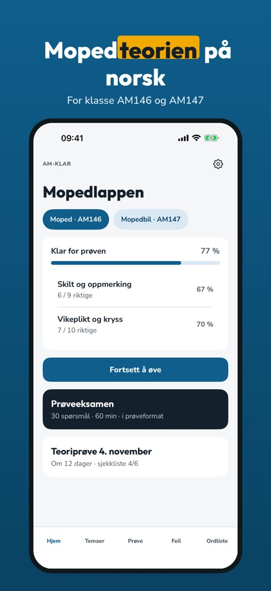
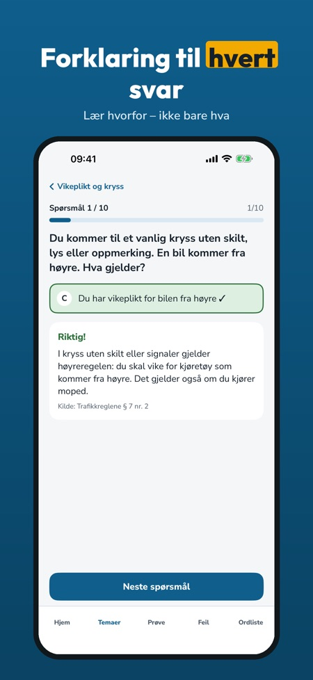
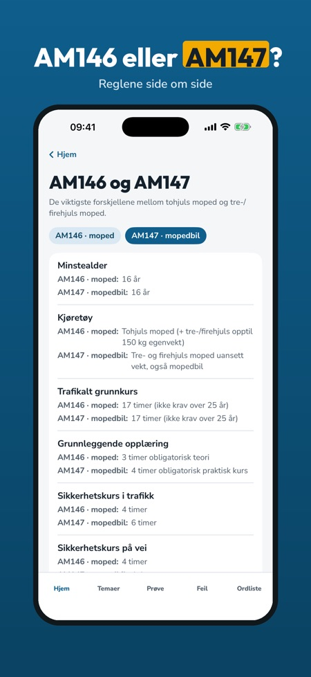

Teori for moped klasse AM. Øv teorien til mopedlappen: spørsmål med forklaring, prøvetester og feilene dine samlet – på norsk og uten nett.



AM-Klar hjelper deg å øve teorien til mopedlappen (klasse AM146) – med mopedregler, ikke bilregler.
Du kan øve på 20 spørsmål, ta én prøvetest og bruke ordlisten og sjekklisten uten kjøp. Fullversjonen er et engangskjøp som låser opp alle spørsmål, prøvetester og statistikk. Ingen abonnement. Familiedeling er slått på: kjøper en voksen i familien appen, får du også fullversjonen.
AM-Klar er uavhengig og ikke tilknyttet Statens vegvesen. Prøven tar du hos Statens vegvesen.